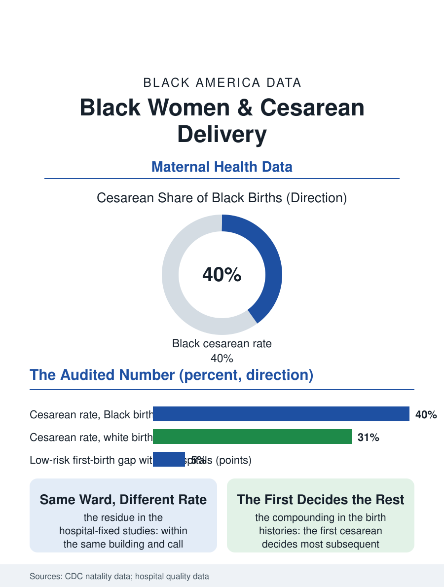

Black Public Health
Same Ward, Different Rate: Black Women and Cesarean Delivery
Four in ten Black births are cesarean, the gap persists inside the same hospitals and risk classes, and the first operation decides the rest. The cesarean file.

Black women undergo cesarean delivery at the highest rates of any group in the birth data, roughly four in ten births against three in ten for white women, and the gap persists within hospitals, within risk categories, and within the low-risk first-birth group where the national quality effort concentrates, making the cesarean file the maternal section's most audited number. This article reads the cesarean file.
The Low-Risk Gap
The quality measure at the file's center is the NTSV cesarean rate, the nulliparous, term, singleton, vertex first births, the population where the operation's discretion is widest and the rate's variation least explained by the patients' conditions. The hospital data show the Black-white gap inside that measure at nearly every level of analysis: nationally, within states, and in the studies that hold the hospital constant, within the same building and the same call schedule, where the rates for Black first-time mothers run several points above the white rate in the same unit, a residue the clinical variables in the records do not account for. The contributors the literature documents are the labor process's own: the induction rates and their management, the fetal monitoring's interpretation, the dystocia diagnoses whose thresholds are the obstetric judgment's softest ground, the provider's time and the unit's census pressing on the patience the vaginal birth requires, with the studies of provider-level variation finding individual practitioners' rates varying enough to compose much of the institutional gap. The woman's own file enters honestly: the request cesarean is rare in every group in the survey data and explains none of the gap, while the prior cesarean's shadow, the first operation deciding the second's mode in the great majority under the trial-of-labor's limited availability, converts the first-birth gap into the lifetime pattern the birth counts show. The anesthesia and transfusion files inside the operation's ledger carry their own gradients in the morbidity data, the general anesthesia rate and the transfusion rate both running higher in the cesarean population's Black segment, the surgical birth's risks compounding along the same lines as its frequency.
The Operation's Ledger
The cesarean's consequences are the maternal file's: the operation is safe by surgical standards and riskier than the vaginal birth it replaces across the hemorrhage, infection, and thromboembolism ledgers, its risks compounding in the subsequent pregnancies, the placenta accreta spectrum and the uterine rupture whose rising incidence tracks the cesarean rate's own history, so that the first-birth gap is a down payment on the later pregnancies' risk, in the population whose maternal morbidity file is already the nation's heaviest. The recovery file adds the household's arithmetic, the surgical recovery against the newborn's care and the hourly job's absent leave, in the pattern of the postpartum file. The baby's ledger is the file's balance: the cesarean's neonatal respiratory costs against the emergencies it averts, a balance the obstetrics literature weighs case by case and which the file does not pretend the aggregate rate settles, the right rate being a clinical question the file's data deliberately refuse, its subject being the difference between the rates for the same clinical picture in different bodies, which no clinical logic prices.
The Audit's Frontier
The cesarean file closes on the measurement's frontier, because the rate is now a published quality measure and the systems' responses are in the data: the labor support interventions, the doula file's presence, the midwifery integration, the induction protocols' standardization, and the peer review of the individual provider's rate, each posting reductions in the systems that adopted them, with the equity question being the order of the benefit's arrival, whether the gap narrows as the average falls or rides the average down intact, a distinction the dashboards that report the rate by race exist to answer. The file's last entry is the labor room's clock, against which the operation is so often decided in the small hours, by the judgment of the tired and the pressed, in the unit whose census the staffing file sets. The birth data count the first-birth gap in points that have resisted a decade of quality work. The file records the resistance as the finding: the most measured number in maternal care is the one whose racial difference the measurements have not yet moved, which locates the difference, with a precision the field did not seek, exactly where the judgment lives.
More in Black Public Health
Hypertension Among Black Adults: Prevalence, Control, and Consequences
About 55 percent of Black adults have hypertension — the highest rate of any U.S. group. Prevalence, onset, control, and the stroke, heart, and kidney consequences in the data.
Diabetes Among Black Adults: Prevalence and Complications
Nearly one in five Black adults has diabetes, diagnosed or undiagnosed — and its complications fall with particular weight. The CDC data on prevalence, control, and outcomes.
Black Life Expectancy: The Gap at Birth and Its Causes
Black life expectancy at birth is about 73 years, roughly five years below the national figure — the summary measure of every health gap in this section. The CDC data.
Source: Centers for Disease Control and Prevention, natality data; Joint Commission NTSV cesarean quality measure analyses.